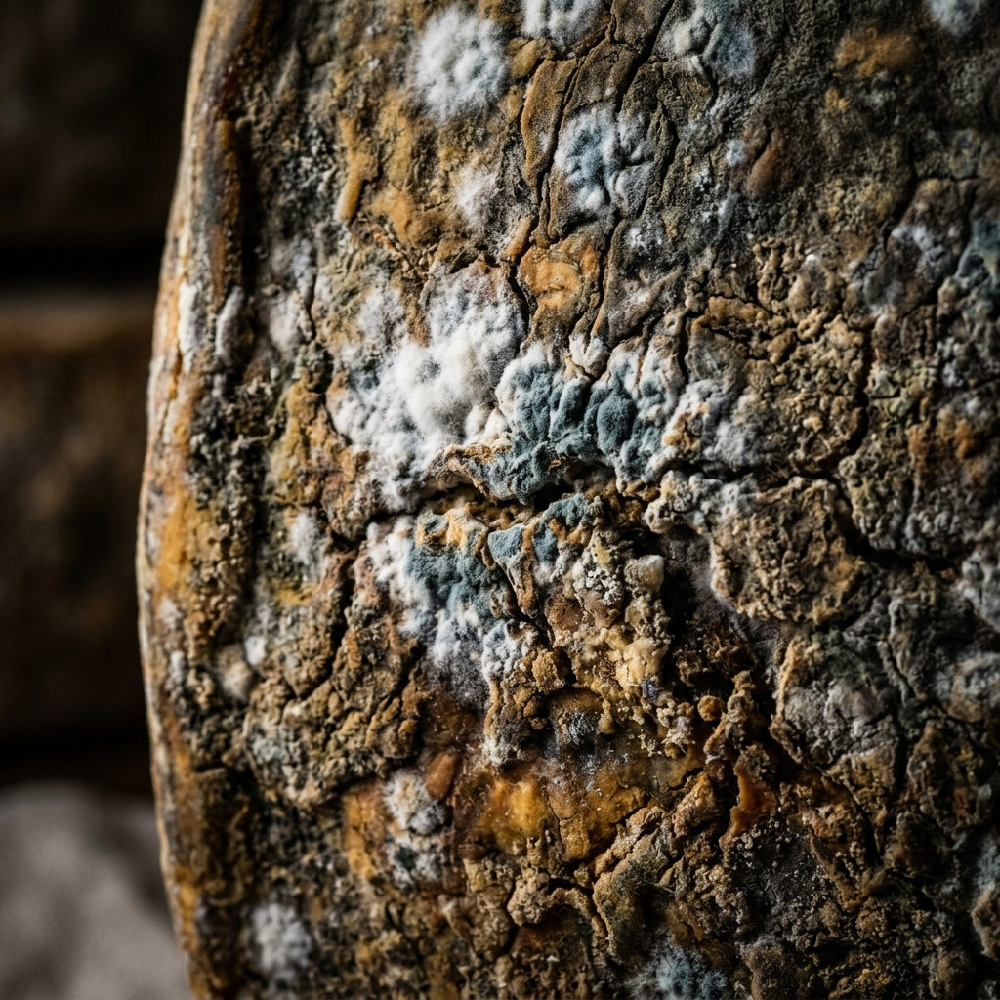
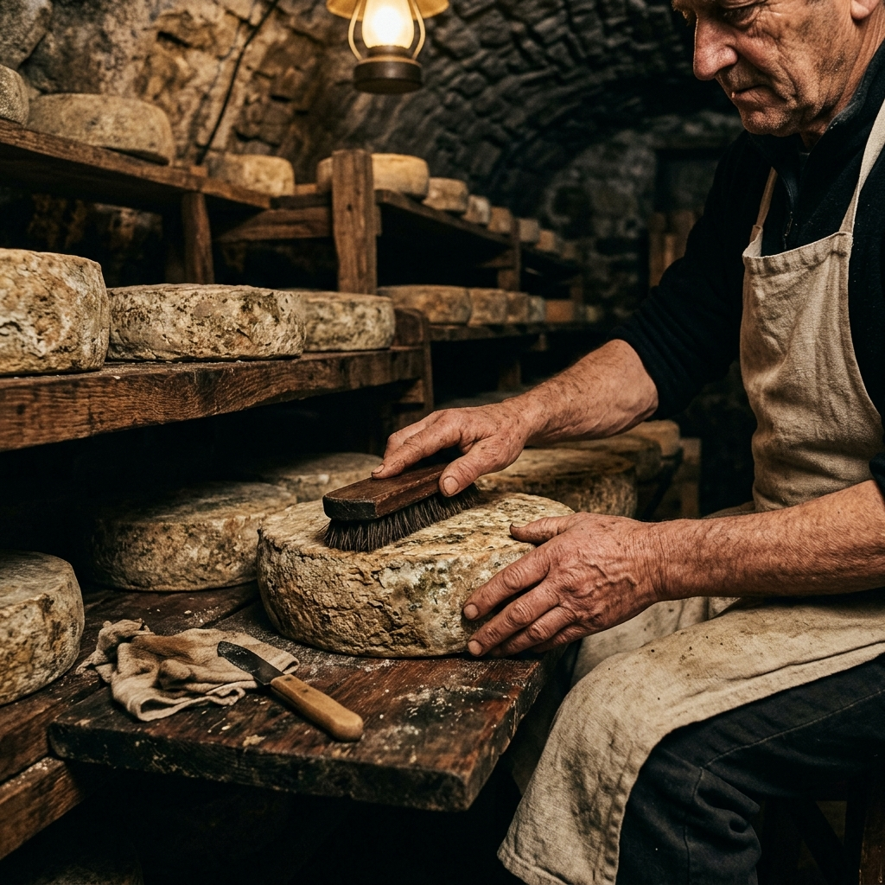

What Happens
Inside the Cave?
Affinage is the art of maturing cheese — guiding each wheel from its raw, freshly pressed state to the complex, deeply flavoured product it was always meant to become. It requires equal parts science, intuition, and patience.
Unlike most modern cheese operations, we do not rush this process. Our wheels are turned by hand. Our rinds are brushed personally. Our cave conditions are monitored daily. Every decision about when a wheel is ready is made by a trained affineur, not a timer.

The Five Stages
of Cave Maturation
Each stage of our process has been refined over 36 years. Nothing here is left to chance — and nothing is rushed.

Our cellar runs 48 metres deep into the Burgundy limestone — a natural, constant environment
Reception & Assessment
Each fresh wheel arrives from our partner farms within 48 hours of pressing. We immediately inspect weight, rind density, moisture levels, and pH to assign its ideal aging path and estimated cave maturation time. Every single wheel receives a unique paper tag recording its origin farm, exact pressing date, and initial master affineur notes.
Salting & Rind Development
Wheels are dry-salted or brine-bathed to begin rind formation. This step controls moisture loss and protects against unwanted moulds while encouraging the beneficial ones — the Penicillium candidum that creates bloomy coats, the Brevibacteria linens responsible for washed rind character, and the natural cave flora that gives our alpine wheels their terroir.
Turning & Brushing
Wheels are turned by hand every two to four days — some daily in early maturation — and brushed with brine washes, wine, beer, marc, or herb solutions depending on the desired flavour profile. This is the most intimate part of affinage: a daily conversation between the affineur and the wheel. You learn to read a wheel's mood by its weight and the sound of your knock.
Cave Maturation
The cave does its slow, quiet work. Temperature gradients within our 48-metre cellar mean different zones produce different results. Our warmest shelves near the arched entrance ripen bloomy rinds under gentle temperature swings. The deep, cold back wall cradles our long-aged Alpine wheels for 12–24 months in stillness. The middle zone, stable and humid, is home to our washed-rind collection.
Tasting, Benchmarking & Release
Before any cheese leaves our cellar, it is tasted by our full team against the tasting notes profile established for that variety. Aroma, paste texture, rind character, and finish length are all evaluated. Only wheels that fully meet their flavour, texture, and aroma benchmarks are approved for release or sale. Anything that falls short remains in the cave — or, rarely, is removed entirely.
Conditions That
Shape the Cheese
Our cellar environment is not manufactured — it is managed. The Burgundy limestone breathes, and so does the cheese within it.
Temperature: 12°C
Maintained year-round without mechanical cooling. The thermal mass of stone walls naturally insulates the cave, creating a stable climate that commercial facilities can only approximate.
Humidity: 95%
Critical for preventing excessive moisture loss. We monitor with analogue hygrometers checked daily. High humidity supports the wild yeasts and bacteria that build rind complexity.
Airflow: Controlled
Gentle air circulation through the limestone prevents stagnant pockets and distributes native microbial flora, essential for spontaneous rind development. No forced ventilation.

Three Cave
Micro-Zones
The Arch Zone
Warmest zone, near the entrance. Used for bloomy rind and washed-rind cheeses aged 3–12 weeks. Slight temperature changes encourage surface flora growth.
The Mid-Cellar
Most stable zone, used for our semi-hard and washed-rind ranges aged 2–6 months. The sweet spot between temperature and humidity for medium-term maturation.
The Deep Back Wall
Coldest, most humid zone inside the cave. Reserved for our long-aged alpine wheels — 12 to 24 months at near-perfect stability. Quiet time does the rest.
How Long Does
Each Style Age?
Bloomy Rind
21–60 days. Fast-maturing, delicate styles that develop their distinctive white downy coat within the very first two weeks of their quiet cave life.
Washed Rind
4–16 weeks. Regular washing in brine or wine develops an orange-pink rind and complex, earthy paste. Requires the most frequent hands-on attention.
Hard Alpine
6–24 months. Our flagship category. Long, slow maturation develops crystalline paste, deep butterscotch and hazelnut notes, and immense complexity.
What Actually
Happens During Aging?
Cheese aging is fundamentally a process of controlled decomposition — the breakdown of fats and proteins by enzymes, bacteria, and fungi, producing hundreds of flavour compounds that give aged cheese its extraordinary complexity.
Proteolysis — the breakdown of milk proteins — is responsible for the paste becoming softer and creamier near the rind, and for the development of amino acids that taste of broth, butter, and sweetness. Lipolysis — the breakdown of fats — produces the piquancy, sharpness, and complexity in long-aged alpine and blue-veined cheeses.
Our role as affineurs is to create and maintain the conditions in which these processes occur in a controlled, predictable way — and to intervene when needed to correct or encourage them.
Proteolysis
Protein breakdown produces amino acids responsible for umami, sweetness, and the soft, creamy texture near the rind.
Lipolysis
Fat breakdown creates free fatty acids — the source of sharpness, piquancy, and buttery complexity in long-aged cheese.
Cave Flora
Natural yeasts and bacteria in our limestone cave contribute unique microbial flavour compounds to every wheel we produce.
Tyrosine Crystals
The white specks visible in long-aged alpine cheese — an amino acid formed by proteolysis and a sign of excellent, slow maturation.
Frequently Asked
Questions
Taste the Process
in Every Bite
Every wheel in our tasting boxes carries the full story of our cellar — the cave, the affineur's hands, and the slow passage of time.